Программирование
Список языков программирования | Веб - программирование | Которые введут наши специалисты в области программирования

Список языков программирования | Веб - программирование | Которые введут наши специалисты в области программирования
Высокоуровневый язык программирования общего назначения с динамической строгой типизацией и автоматическим управлением памятью, ориентированный на повышение производительности разработчика,
читаемости кода и его качества,
а также на обеспечение переносимости написанных на нём программ.
Язык является полностью объектно-ориентированным в том плане, что всё является объектами.
Необычной особенностью языка является выделение блоков кода пробельными отступами.
Синтаксис ядра языка минималистичен, за счёт чего на практике редко возникает необходимость обращаться к документации.
Сам же язык известен как интерпретируемый и используется в том числе для написания скриптов.
Примеры использования Python
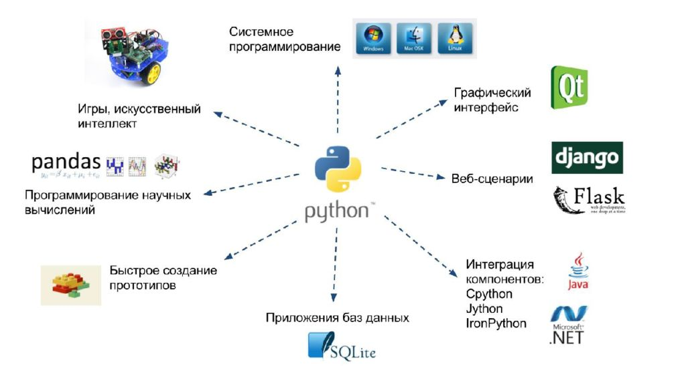
Код Python`a
JavaScript ("Js" для краткости) — это полноценный динамический язык программирования,
который применяется к HTML документу, и может обеспечить динамическую интерактивность на веб-сайтах.
Его разработал Brendan Eich, сооснователь проекта Mozilla, Mozilla Foundation и Mozilla Corporation.
JavaScript невероятно универсален и дружелюбен к новичкам.
Пример использования JavaScript`a
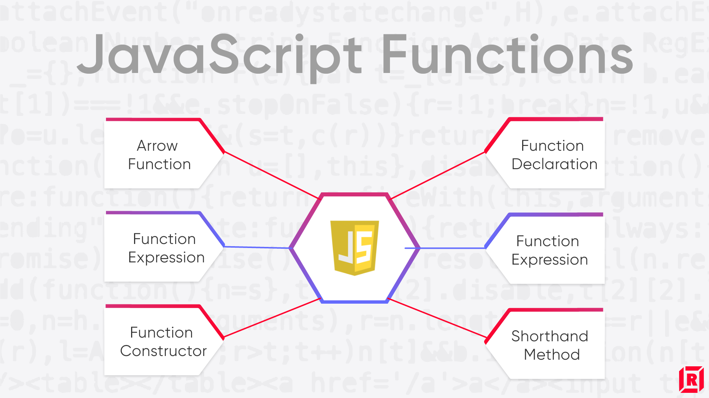
Код JavaScript`a
Широко используется для разработки программного обеспечения,
являясь одним из самых популярных языков программирования.
Область его применения включает создание операционных систем,
разнообразных прикладных программ, драйверов устройств,
приложений для встраиваемых систем, высокопроизводительных серверов,
а также компьютерных игр.
Существует множество реализаций языка C++, как бесплатных, так и коммерческих и для различных платформ.
Например, на платформе x86 это GCC, Visual C++, Intel C++ Compiler, Embarcadero C++ Builder и другие. C++ оказал огромное влияние на другие языки программирования,
в первую очередь на Java и C#.
Пример использования C++

Код C++
Фронтенд (англ. frontend) — это разработка пользовательских функций и интерфейса.
К ним относится всё, что пользователи видят на сайте или в приложении,
и с чем можно взаимодействовать:
картинки, выпадающие списки, меню, анимация, карточки товаров, кнопки, чекбоксы, интерактивные элементы.
Примеры использования FrontEnd`a
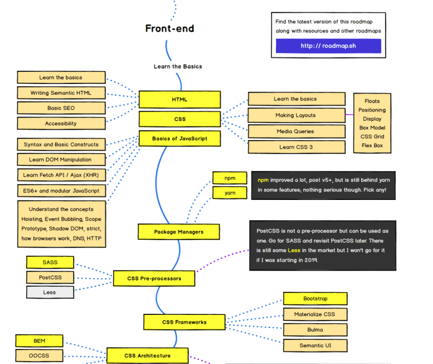
Код FrontEnd`a
Бэкенд — это разработка бизнес-логики продукта (сайта или веб-приложения).
Бэкенд отвечает за взаимодействие пользователя с внутренними данными, которые потом отображает фронтенд.
Попросту говоря, это то, что скрыто от глаз пользователя и происходит вне его браузера и компьютера.

Код BackEnd`a (PHP)
Виды логистических систем| Логостика| Которые введут наши специалисты в области логистики
Обеспечение качественного, своевременного и комплектного производства продукции
в соответствии с хозяйственными договорами, сокращение производственного цикла
и оптимизация затрат на производство.
Пример работы производственной логистики
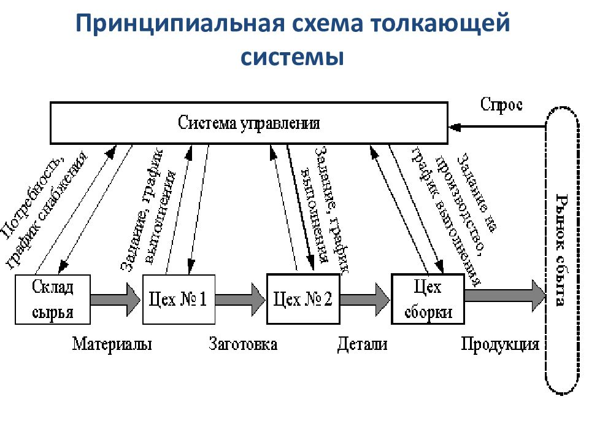
Для дальнейшего обучения нажмите на "Поступить".
Цена курса: 5600
То система по организации доставки, а именно по перемещению каких-либо материальных предметов, веществ и пр.
Оптимальным считается маршрут, по которому возможно доставить логистический объект в
кратчайшие сроки (или предусмотренные сроки) с минимальными затратами,
а также с минимальным вредом для объекта доставки.
Пример работы Транспортной логистики
1)Первый пример
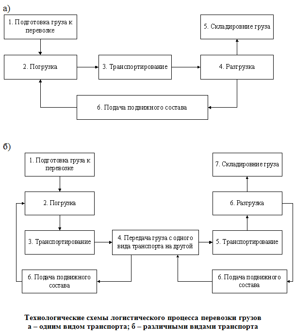
2)Второй пример

Для дальнейшего обучения нажмите на "Поступить".
Цена курса: 6400
это деятельность по планированию, организации и осуществлении приемки и хранения различных матери-альных ценностей,
подготовки их к производственному потреблению и распределению грузов между потребителями,
а также наличие системы управления информационными потоками.
Пример работы Складской логистики
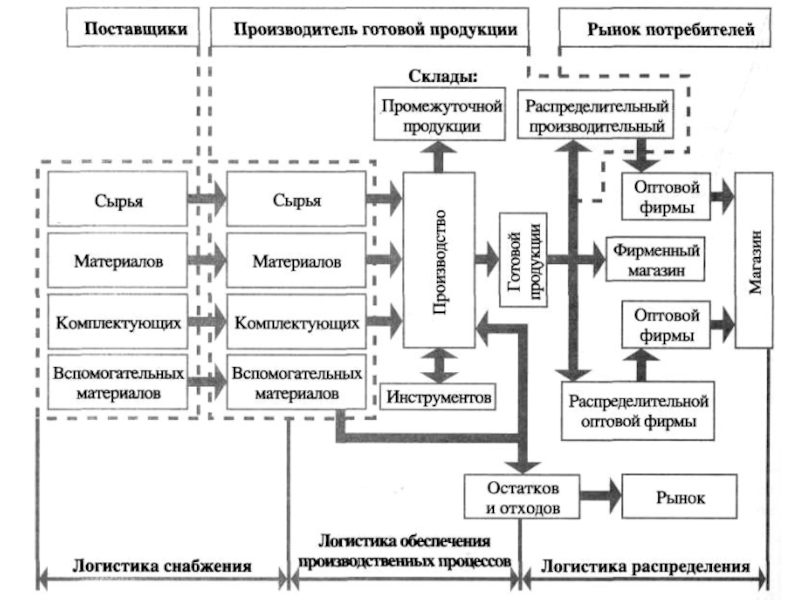
Для дальнейшего обучения нажмите на "Поступить".
Цена курса: 7200
Логистика запасов – раздел общей теории логистики,
изучающий закономерности создания и распределения запасов,
разрабатывающий методы
и подходы эффективного управления материальными запасами на всех стадиях движения материального потока.
Примеры работы логистики запасов
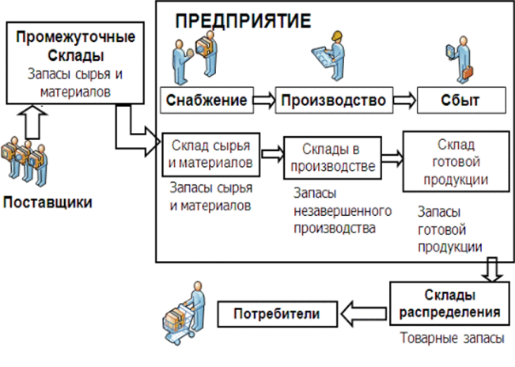
Для дальнейшего обучения нажмите на "Поступить".
Цена курса: 8500
Это - комплекс услуг, которые оказываются во время проведения и оформления заказа, покупки,
поставки и дальнейшего обслуживания товара.
Цель логистического сервиса - обеспечение надежного функционирования всей цепи поставок
и достижения наилучшего экономического результата.
Пример использования логистики сервисов
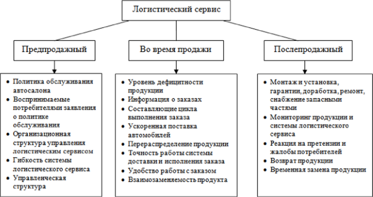
Для дальнейшего обучения нажмите на "Поступить".
Цена курса: 10000
На основе проведенного исследования нами предлагается следующее определение рассматриваемого понятия:
информационная логистика - это наука об управлении информационным потоком,
направленная на оптимизацию его движения наряду с материальным,
финансовым и сервисным потоками во времени
и пространстве с целью эффективного применения ресурсов логистической системы.
Пример использования информационной логистики
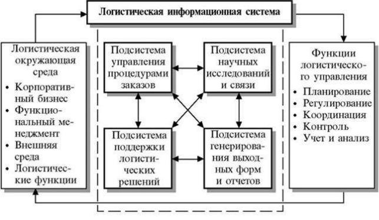
Для дальнейшего обучения нажмите на "Поступить".
Цена курса: 12000
Экономисты - это Специалист в экономике или её разделах,
эксперт по экономическим вопросам промышленности, сельского хозяйства,
банковского дела и так далее. Экономистами называют как учёных, так и практиков,
которые работают в области исследования, планирования и руководства хозяйственной деятельностью.
Маркетолог — специалист, который создает стратегию продвижения продуктов и услуг,
чтобы увеличить продажи и общий доход компании.
Для этого он исследует потребительский рынок, следит за трендами,
участвует в создании рекламных кампаний и многое другое.
Примеры работы маркетолога
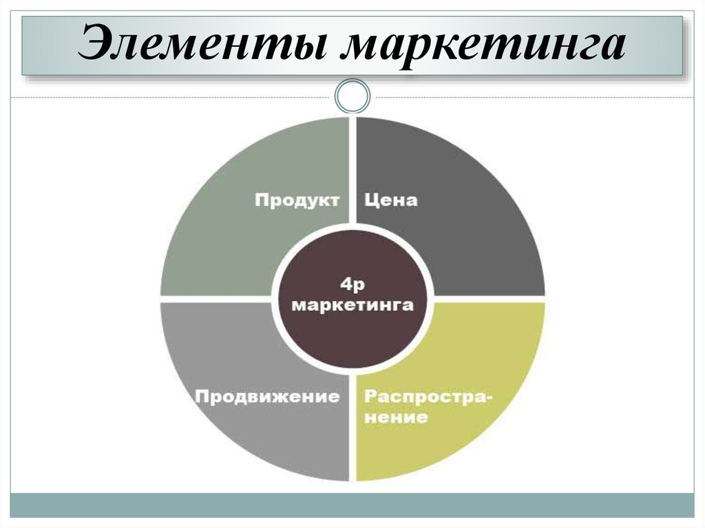
Для дальнейшего обучения нажмите на "Поступить".
Цена курса: 12500
Финансовый аналитик-это профессионал,
проводящий финансовый анализ для внешних или внутренних клиентов в качестве основной функции своей работы.
Эта роль может конкретно называться аналитик по ценным бумагам,
аналитик исследований, аналитик акций, инвестиционный аналитик или рейтинговый аналитик.
Название должности является широким.
Пример работы финасового аналитика

Для дальнейшего обучения нажмите на "Поступить".
Цена курса: 15900
Аудитор лицо, занимающееся аудитом (ревизией бухгалтерских книг, документов и отчётности)
и консультационной деятельностью, связанной с наладкой бухгалтерского учёта.
Также — юридическая фирма, занимающаяся такой деятельностью (аудиторская компания).
Пример работы Аудитора
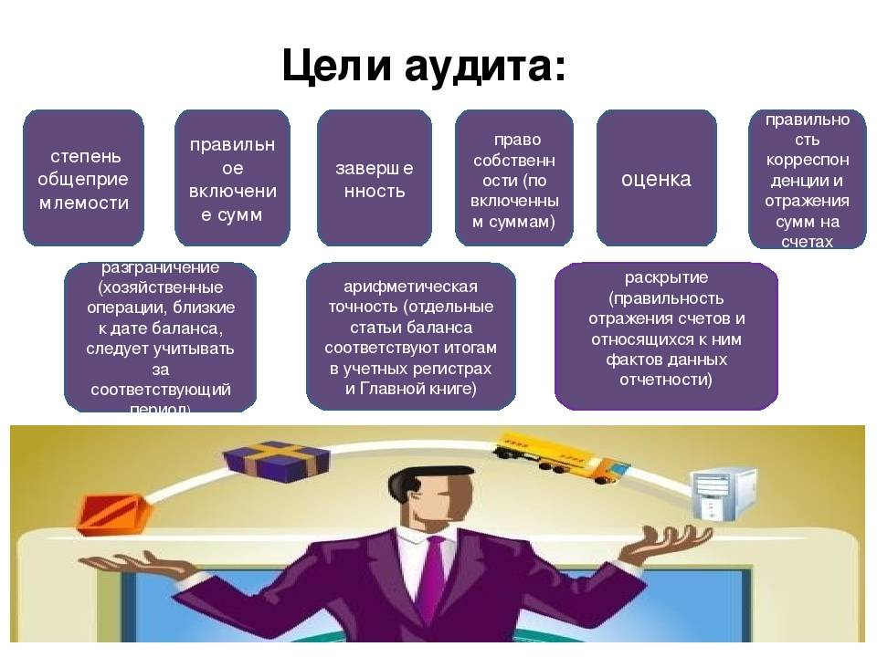
Для дальнейшего обучения нажмите на "Поступить".
Цена курса: 17950
Тестировщик ПО — это человек, проверяющий программное обеспечение на предмет дефектов.
Обнаруженные ошибки в последующем исправляются, но уже другим специалистом.
После тестирования специалист готовит отчёт и передаёт его разработчикам для работы над ошибками.
Профессия появилась не так давно, но по мере роста рынка IT она становится всё популярнее.
Пример работы Тестировщика
Для дальнейшего обучения нажмите на "Поступить".
Цена курса: 4000